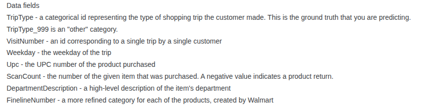
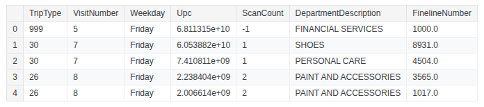
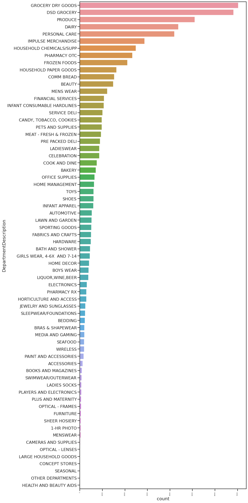
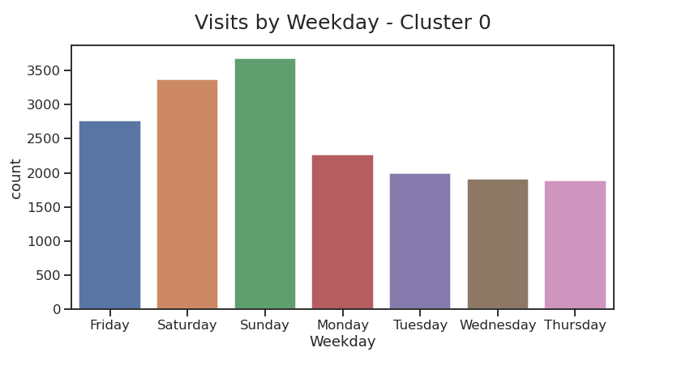
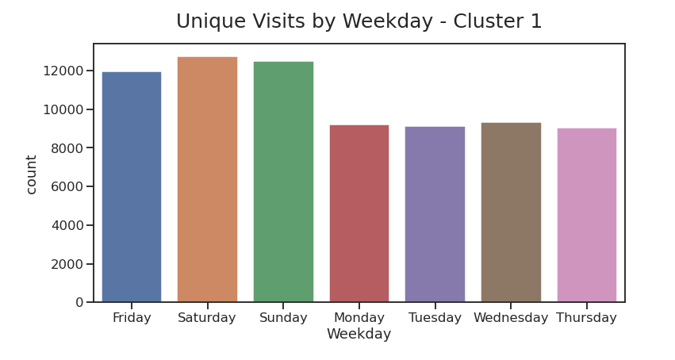
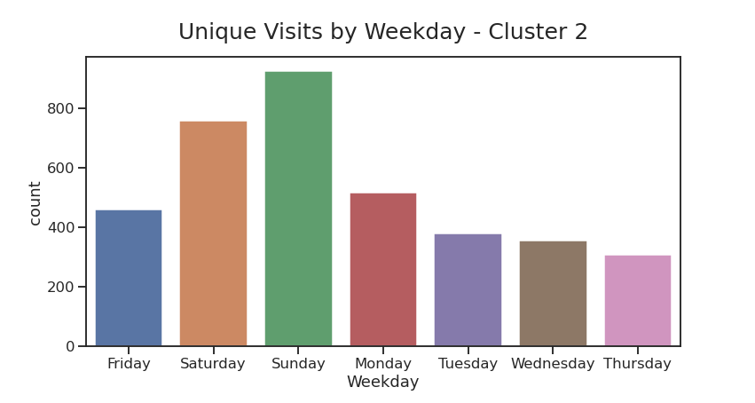
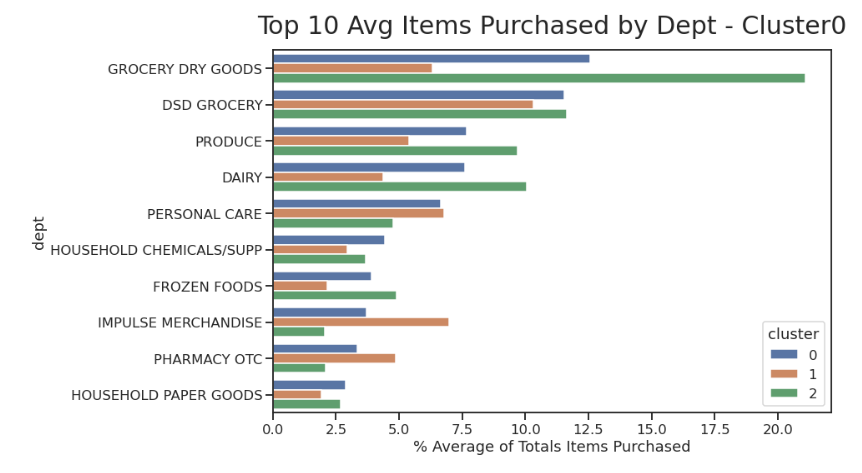
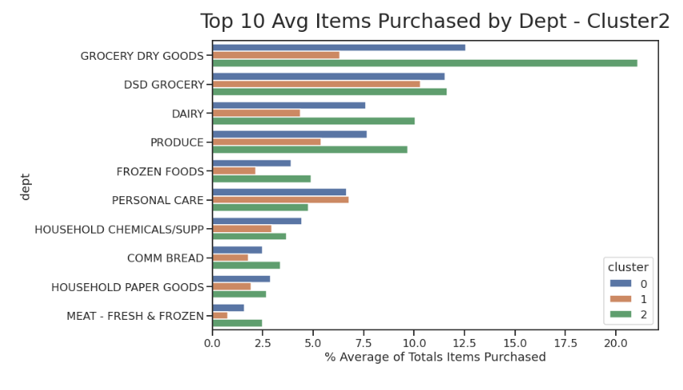
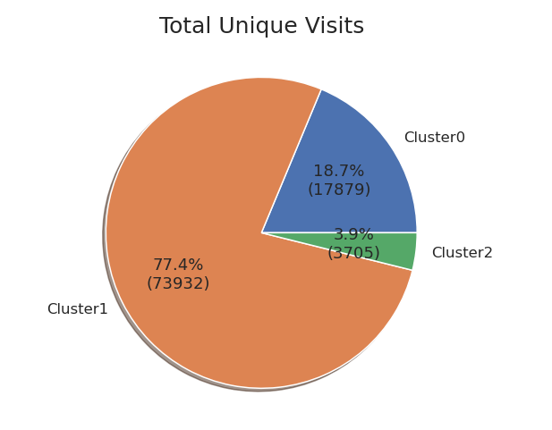

Cluster Analysis
I will show how we can use retail transaction data to identify customer types
The dataset used for this analysis is a publicly shared dataset from Walmart


These are the first 5 rows of the dataset. The dataset itself contains 647,054 rows.

This is a graph of items purchased by Department. Not surprising that grocery items are the most common purchase at Walmart.

Again, we are not surprised to see that most customers go to Walmart on Fri/Sat/Sun.

Knowing all of this, let's try and apply cluster analysis to see if we can create different customer profiles.

Applying K-Means, we can see that there should be 3 clusters.



When we look at the different clusters, we can see some differences. Cluster 0 has a similar breakdown to that of the overall breakdown of customers by day. However, we can see that for Cluster 1, these customers are more indifferent to the day of the week. For Cluster 2, we can see that these customers have a much strong preference for Sunday and less so on the weekend.


The real differences start to show when we look at the number of items purchased by customers in the different clusters. Cluster 1 has a very low item count, whereas Cluster 2 has a very high item count. Since Cluster 0 falls in between,
I would label Cluster 0 as average. 


For the most part, Cluster 0 and Cluster 2 have very similar purchases by department. Cluster 1 has a strong preference for Impulse Merchandise and Mens Wear when compared to the other clusters.

To summarize:
Cluster 1: Biggest group of customers. These customers come in and purchase anywhere between 1-10 items and have a stronger preference for
Impulse Merchandise and Men's wear compared to the other clusters.
Cluster 0: Second biggest group of customers. These are your average customers. They come in and purchase anywhere between
16-30 items with no big preference when it comes to items.
Cluster 2: Smallest group of customers. Similar to Cluster 0 except that they have a strong preference to shop on the weekends
and they purchase more items per visit.